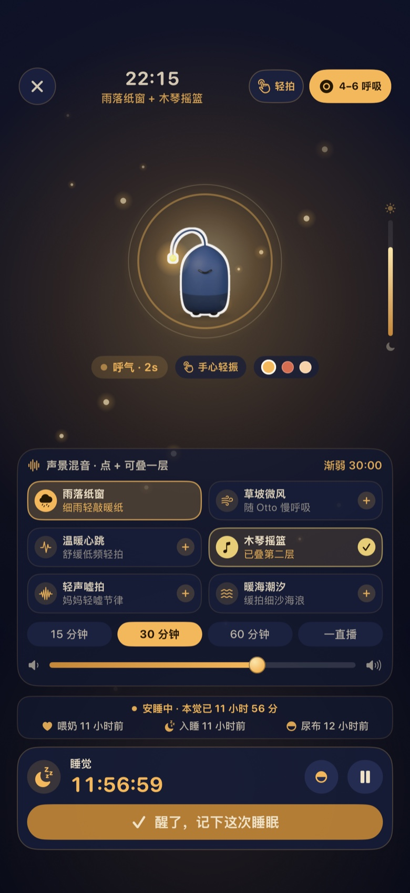

严谨引用公开指引，不替代医生
摸索台灯只整理温和清楚的家庭参考，不是医疗器械，无法也不应取代儿科医生的临床判断。
- 世界卫生组织（WHO）0–36 个月身长、体重与头围标准表
- 美国疾控中心（CDC）发育线索与美国儿科学会（AAP）早产校正建议
- 国家卫健委 0–3 岁养育指南及多地区常规儿保随访日历
摸索台灯陪父母和 0–3 岁的孩子一起玩、一起长大。它不是育儿考卷，从不催促打卡，也不替孩子打分，只为你和孩子留下一张矮桌、一盏灯，和一段安安静静相伴的时光。
纯离线 iPhone 应用 · 零账号零广告 · 一次买断陪伴三年


「摸索」是孩子伸出手的好奇，「台灯」是大人站在半步之外照亮。一位负责安心往前探，一位负责守住光。
哑光软胶质感的苔绿色小圆石，头顶冒出一对锯齿真薄荷叶。闲不住、眨眼很快，看见镜子或积木总要先凑上去摸一会儿。
轻点卡片看看他的小动作
深蓝色的安静高圆顶，总像有些犯困地垂着眼皮，偶尔打个长哈欠，可头顶金色灯珠从未熄灭。Moss 摸到哪里，光就偏向哪里。
轻点卡片看看他的神态没有连续登录奖励，也没有催促通知。哪怕隔了一周没打开，两位伙伴依然安安静静等在原处。
涵盖 0–36 个月 37 站成长脉络并支持早产矫正月龄，呈现参考但不评价孩子「达不达标」。
画面里没有台词气泡和吵闹音效，一切温柔留白只为把父母的注意力还给地垫上的真实互动。
摸索台灯用家里的丝巾、积木与纸杯编排了 46 套亲子活动。左右拖动下方金色珠帘，亲眼比较 3D 软陶与 2D 水彩两种世界质感。

 3D 软陶世界
2D 水彩剪纸
3D 软陶世界
2D 水彩剪纸
在应用内打开活动，用大拇指轻滑下方桦木珠轨就能连贯看清动作拆解；也可以把手机平放桌上，一起敲木琴、玩 Otto 光影手影墙与护耳雨声木珠棒。

轻点路上的任意一颗珠子，走过草地、森林小丘与小河村庄。满 36 个月是最后一站，却不是终点：故事仍在继续。

刚来到这个明亮喧闹的世界，宝宝最喜欢离脸二三十厘米的温柔注视、黑白对比轮廓和贴近心跳的低声轻哼。

不用忙着修图发文，60 种手绘百味食盒初尝观察、拍立得「第一次」、月度成长绘本和写给三岁的金色火漆长信，都会按月份稳稳留在手机里。
夜深以后抱哄宝宝、喂奶或夜醒安抚，深蓝底色配上不刺眼的暖金光晕刚好呵护睡眼与单手操作。试着点按下面节拍，感受「无声掌心轻拍」如何从 60 拍慢慢缓下来。

所有月龄参考均标明公共卫生机构出处，所有成长记忆永不离开这台手机，也没有持续续费订阅。
摸索台灯只整理温和清楚的家庭参考，不是医疗器械，无法也不应取代儿科医生的临床判断。
无订阅扣费 · 无广告 · 支持面容锁与本地备份
带孩子已经需要足够多的耐心，我们选择最简洁诚实的一次买断制：下载一次即拥有整整三年的全部内容与记录工具。
当然可以。即使跳过资料或暂不同意保存记录，所有 0–36 个月游戏、玩具盒和夜灯功能依然完整可用；想记宝宝日常时随时填入即可。
只需在资料里填入出生孕周，应用便会自动按照儿科学会惯例采用矫正月龄，不会替早产宝宝赶进度。
不会。除系统设备云备份随新机自然还原外，还可以在「工坊 › 离线数据与备份」把全部记录导出一份便携档案保存在「文件」，随时一键还原。